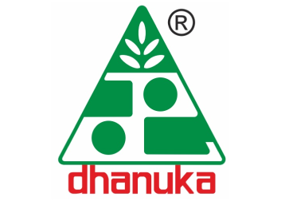
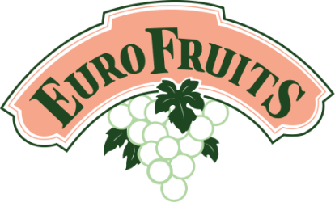
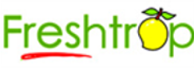
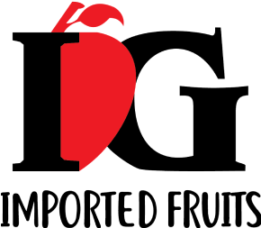
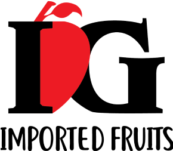
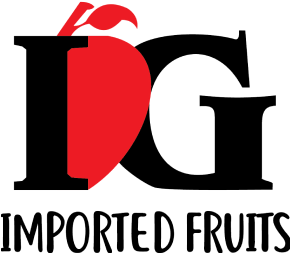
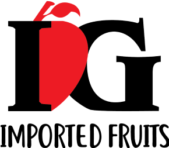

Our Clients



 


Satcard is revolutionizing agriculture with smart technology solutions designed to optimize farming practices and increase efficiency. Our mission is to empower farmers with cutting-edge tools and techniques that enhance productivity, sustainability, and profitability. We are dedicated to bringing the benefits of modern technology to rural farming communities across India.
At Satcard, we partner with progressive farmers who are eager to embrace the future of farming. We provide comprehensive training and support on advanced agricultural practices, precision farming, and data-driven decision-making. Our solutions include IoT devices for real-time monitoring, automated irrigation systems, and AI-powered analytics to ensure optimal crop management.
At SATCARD, we're committed to transforming agriculture through innovative technology. We partner with dedicated farmers across Indian villages to implement smart farming practices, ensuring sustainability and efficiency. Our goal is to enhance agricultural productivity while preserving the environment.
Our journey begins with the integration of advanced technologies like IoT, AI, and data analytics in farming practices. We provide farmers with real-time insights and precise guidance on crop management, irrigation, and pest control. This ensures optimal growth conditions and maximizes yield.
We utilize precision farming techniques to monitor soil health, weather patterns, and crop progress. Our smart sensors and automated systems help in efficient resource utilization, reducing wastage and promoting sustainable agriculture. This meticulous approach ensures that every produce meets the highest quality standards.
Our technology empowers farmers by providing them with tools and knowledge to make informed decisions. We aim to improve their livelihoods by increasing productivity and reducing costs. SATCARD is dedicated to building a community where farmers thrive, and their hard work is recognized and rewarded.
At SATCARD, we invite you to be part of the smart agriculture revolution. Experience the benefits of cutting-edge technology in farming, and witness how it transforms the agricultural landscape. Together, we can create a sustainable future for generations to come.
Visualizing the data that matters for sustainable agriculture
Loading...
Loading...
Loading...
Loading...
Loading...
Loading...
Loading...
Satcard device installed at the farm captures data from soil, climate, and crop canopy and sends it to Satcard server.
Know More →Farm data from the device gets processed using proprietary analytics algorithms on our cloud server.
Know More →Insights on growing the best quality crops are sent to mobile App and Dashboards.
Know More →Export Quality Produce
Increase in Production
Reduction In Input Cost
Reduction In Water Usage
